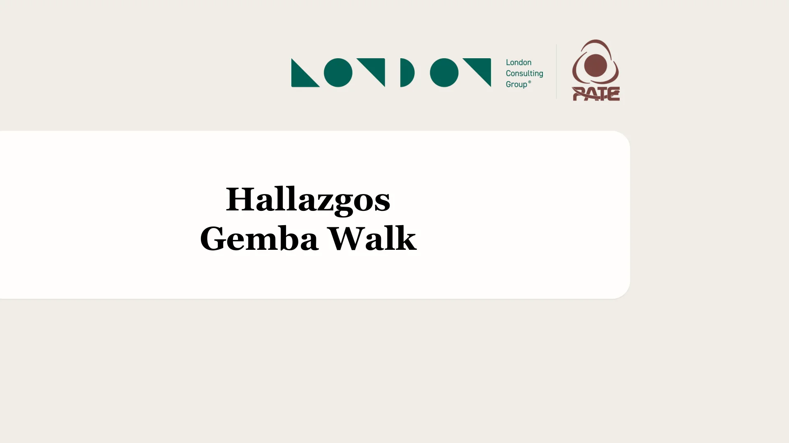

Gemba Walk · mar 06-oct-2026
Hallazgos del Gemba Walk
Recorrido de planta con el equipo de PATE. Cada lámina reúne lo que observamos en piso, lo que dijo el equipo en la línea y, donde aplica, el estudio estadístico que lo dimensiona.

![Lámina 2 de 9. Deshuese 2. Línea 1. Sistema de remuneración variable. «Mira, este es el reporte que sacamos de MAREL para el sistema de bonos del equipo de deshuese 2. Nadie se lo ganó el mes pasado». Encargado de Sistemas (TI). De 4 pantallas que revisamos en la línea, 3 no funcionaban. «No, en mi área no hay bonos. Pagan 96 y 100 pesos aproximadamente por puntualidad y asistencia. Solo Deshuese tiene bonos». Eviscerados. Estudio Estadístico LCG. 2025 1,807,261 · 2026 1,761,377. Bajó 45,884 aves, −2.5% contra el mismo mes del año pasado. La columna de nombres del reporte de bonos está tapada.](../assets/gemba/gemba-02.webp)
![Lámina 3 de 9. Deshuese 2. Línea 1. Sistema de seguimiento y programación del personal. «La mejor posición para estar en la línea es pegado al final, cerca de calidad porque el sistema si no va en el orden de pechuga, pierna, pierna, tiene errores de lectura y te puede perjudicar en tu rendimiento». Operario de deshuese 2. Al final de cada una de las 4 líneas, hay un colaborador (de producción) que revisa la calidad y registra defectos. Hay una pantalla central en la que se puede ver el seguimiento, no necesariamente la ve el operador. «Si nos dan la carga completa (12 jaulas por día), nosotros podemos avanzar con el ritmo y la productividad muy cercana a los objetivos». Gerente Producción.](../assets/gemba/gemba-03.webp)
![Lámina 4 de 9. Deshuese 2. Reporte MAREL. «Todavía no lo tenemos para todas las áreas de producción (registro en Excel de ausentismo pasado de papel a Excel), iniciamos con Eviscerado, pero es parte de los proyectos tenerlo». Producción. 1. Línea 3 opera a un tercio de su capacidad. Promedio de canal: 694 kg/h, contra 1,688 a 2,096 kg/h en las líneas 1, 2 y 4 (−63%). De 6 a 10 am prácticamente no produjo (78 y 4 kg/h a las 8 y 9 am). En el día procesó ≈4.9 t de canal, contra ≈18 t promedio de las otras líneas. Son ≈13 t perdidas en un solo turno. 2. Arranque y cierre sin ritmo, y variabilidad dentro del turno. La primera hora (6 am) rinde menos del 10% del ritmo normal en las 4 líneas, y a las 3 pm cae a 200-600 kg/h. Fuera de la comida, una misma línea oscila hasta 60% hora contra hora (línea 4: de 1,875 a 3,051 kg/h). Sin un estándar por hora no se puede gestionar la velocidad efectiva, que es la palanca número uno del margen. El usuario de Windows en la captura está tapado.](../assets/gemba/gemba-04.webp)
![Lámina 5 de 9. Deshuese 2. Reporte MAREL (estándares de producción). «Desde 2012 (14 años), me parece que es cuándo se implemento MAREL, no se han retado los estándares, no se si deberían de ser más altos o más bajos, pero así han permanecido». Encargado de Sistemas (TI). 1. Se recupera la pechuga, pero se pierde el resto del ave. El rendimiento primario (pechuga) está en meta: promedio de 18.16% contra 18.00%. El rendimiento total promedia 30.59%, contra 35% de estándar y 37% de meta. Faltan 6.4 puntos de carne vendible por ave, y casi todas las estaciones quedan entre 26% y 33%. La fuga está en pierna y recorte, no en pechuga: es carne que se queda en el hueso. 2. Estándares desalineados y datos poco confiables. El estándar de throughput (19 kg/h) está por debajo del real (24), así que no exige nada. Mientras tanto, la meta de pechuga (18%) queda debajo del benchmark de deshuese manual (18.6-20.3%). Sin metas exigentes ni datos limpios, el sistema no sirve para gestionar al operador por desempeño. Los nombres de operarios y el usuario de Windows en la captura están tapados.](../assets/gemba/gemba-05.webp)
![Lámina 6 de 9. Registros manuales y WhatsApp, Producción. Registros manuales y grupos de whatsapp para gestionar. «Definitivamente me gustaría poder usar menos papel, estamos abiertos a actualizarnos. Estos papeles, ni yo, ni mi equipo los digitalizamos, pero lo pasamos a [Producción] y creo que ellos si los pasan a exceles». Deshuese, Pastas y Empaque. 21 archivos de registro diario en deshuese, pastas y empaque (con información duplicada en 6 de ellos). Reporte de calidad en papel, pasado por whatsapp. 16 archivos de registro (con 4 duplicando la misma información parcial) en eviscerado. «Yo si vengo los sábados, mi equipo no, pero yo si, para ponerme al día con todos los registros en papel que tenemos». Eviscerado.](../assets/gemba/gemba-06.webp)
![Lámina 7 de 9. Registros manuales y WhatsApp, Mantenimiento. Registros manuales y grupos de whatsapp para gestionar. «Reistros en sistema, solo los hacemos de los mantenimientos preventivos, los correctivos, solo existen en pape. En este momento no podría responder cuánto tiempo promedio nos tardamos en cada mantenimiento, ni cuál es más recurrente o frecuente, tampoco si hay alguna correlación específica con determinados operarios o líneas». Mantenimiento. No se registran los insumos utilizados en cada uno de los mantenimientos. Los registros de los mantenimientos correctivos solo viven en papel. Los nombres en el chat y en la hoja de tiempos muertos están tapados.](../assets/gemba/gemba-07.webp)
![Lámina 8 de 9. Eviscerado. Seguimiento programación de vacaciones, programación de personal y carga de aves. «Si hay 9 jaulas o si hay 12 programadas, mi dotación completa es de 37 personas. Las vacaciones las programo por meses con mi gente y eso busco que se cumpla en los tiempos definidos. Casi no cambiamos las fechas de vacaciones programadas aunque baje la carga, solo que sea una directriz general de mi jefe». Eviscerado. Estudio Estadístico generado por LCG. 1) Las vacaciones no siguen a la carga. El volumen tuvo 5 valles en 2026 (ene, feb, abr, may, ago), que eran ventanas naturales para descansar. Aun así, a octubre quedan 205 de 628 días pendientes (33%). Siete personas no han tomado ningún día. Ese saldo caerá en oct-dic sin importar el volumen, con ≈3 personas fuera cada día. 2) El pendiente está concentrado y es un riesgo. Ocho personas acumulan 84% de los días pendientes. Hay un arrastre de 2025 (un colaborador, 6 días; resaltado en la hoja). Esto es exposición legal, porque la LFT, art. 81, pide otorgarlas dentro de los 6 meses posteriores al aniversario. También es un costo: los picos se cubren con horas extra ($9.30 M, +4.8%) mientras los valles se pagan con la plantilla completa. *Solo se lleva en papel. La gráfica muestra los días pendientes de Colaborador 1 a Colaborador 8; los nombres de la hoja de vacaciones están tapados.](../assets/gemba/gemba-08.webp)
![Lámina 9 de 9. Eviscerado. Ratio de personas vs aves procesadas. Estudio Estadístico generado por LCG. Miles de aves por persona de Eviscerado, por mes. La plantilla creció 13% y el volumen de agosto quedó igual que en enero (aprox 47,000 aves), así que cada persona procesa 12% menos aves. Brecha: a 53 mil aves por persona (el nivel de marzo y julio), agosto se cubría con unas 33 personas, no 38. «Ahorita tengo una persona de ventas, embarques en mi área porque la castigaron, pero mi dotación completa es de 37 personas, pero tengo una vacante». Eviscerado.](../assets/gemba/gemba-09.webp)
Láminas y pilares
| # | Lámina | Área | Pilares y estudios |
|---|---|---|---|
| 1 | Hallazgos del Gemba Walk | Portada | Portada |
| 2 | Sistema de remuneración variable | Deshuese 2 | |
| 3 | Seguimiento y programación del personal | Deshuese 2 | |
| 4 | Reporte MAREL por línea y por hora | Deshuese 2 | |
| 5 | Estándares de producción en MAREL | Deshuese 2 | |
| 6 | Registros manuales y grupos de WhatsApp | Producción | |
| 7 | Registros manuales y grupos de WhatsApp | Mantenimiento | |
| 8 | Vacaciones, dotación y carga de aves | Eviscerado | |
| 9 | Personas contra aves procesadas | Eviscerado |
Fuente: Gemba Walk de LCG con el equipo de PATE, mar 06-oct-2026. Las láminas se publican como se presentaron; la única modificación es tapar los nombres de personas. Usa las flechas del teclado para avanzar y la tecla Esc para cerrar la vista ampliada.